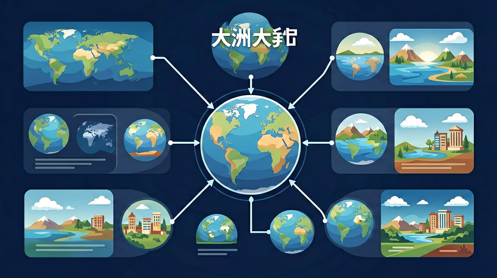

阅读世界地图，描述世界海陆分布状况，说出七大洲、四大洋的分布。

🎯 能说出七大洲四大洋的名称及分布特征
🎯 能判断板块边界类型与地震带的关系
🎯 能分析大陆漂移说的三大证据
❓ 为什么太平洋明明在中间却叫'太平'洋？
❓ 课本说七大洲四大洋，为什么地图上还有那么多小海？
❓ 老师说板块在动，那上海以后会撞到美国吗？
学完这一课，这些问题你都能自信地回答。
面积最小的大洲是？
大西洋中脊的形成原因是？
大洲大洋与海陆变迁是初中地理的重要内容。阅读世界地图，描述世界海陆分布状况，说出七大洲、四大洋的分布。
运用地图和相关资料，描述某大洲的地理位置，并依据大洲地理位置特点，判断大洲所处热量带和降水的空间分布概况。
点击时代/图层按钮切换地图；悬停边界，点击城市标记查看说明。
全球七大洲、四大洋。海陆分布不是固定不变的：沧海桑田有沉积、地壳运动等证据；大陆漂移与板块构造解释大洲大洋的形成与变化。认识“变动中的地球表面”。
先在地图上定位大洲大洋，再举化石、海岸线吻合、火山地震带等证据理解变迁。
常见误区：常见误区是把海与洋混淆，或认为海陆轮廓自古不变。
下列属于四大洋的是？
1. 与物理学的联系：大陆漂移学说与板块运动理论直接应用了物理学中的流体力学原理。1912年阿尔弗雷德·魏格纳提出假说时，就借助了地球自转产生的科里奥利力解释大陆移动方向。现代地幔对流模型则完全建立在热对流物理公式基础上，如雷利-贝纳德对流方程（Rayleigh-Bénard convection）被用于计算地幔物质上升速率。
2. 与生物学的联系：大陆分布直接影响物种演化。南美洲与非洲海岸线形态的吻合性，通过两地发现的同种中龙（Mesosaurus）化石得到印证。现代生物地理学中"华莱士线"（1860年阿尔弗雷德·华莱士提出）正是基于亚澳板块分界形成的物种隔离带。
1910年德国气象学家魏格纳在病床上发现大西洋两岸轮廓的惊人契合，1912年发表《大陆的起源》时却遭学界嘲讽。
直到1950年代海洋勘探发现大西洋中脊的对称磁异常条带（1963年瓦因-马修斯假说），1968年"格洛玛·挑战者号"钻探证实海底年龄从洋中脊向两侧递增，板块构造理论才最终确立。
关键转折是1965年英国地球物理学家威尔逊提出转换断层概念，将大陆漂移、海底扩张统一为板块运动理论。
该理论彻底改变了地理学认知框架：1977年发现的深海热泉生物群落，直接推翻了"生命依赖阳光"的传统生物链理论，促成极端环境生物学的新分支诞生。
同学们，今天我们用一个问题开启课堂："为什么南美洲和非洲的海岸线能像拼图一样吻合？" 这背后隐藏着本节课的核心——大陆与海洋的分布规律。先看数据：地球表面71%是海洋（约3.61亿平方公里），29%是陆地（约1.49亿平方公里），但分布极不均匀——北半球陆地占39%，南半球仅19%。
接下来我们聚焦七大洲四大洋的空间格局。亚洲面积4400万平方公里（占全球陆地30%），而大洋洲仅852万平方公里。太平洋最深处马里亚纳海沟达11034米，相当于把珠穆朗玛峰倒插进去还多2000米！通过对比各大洋平均深度（太平洋3940米vs北冰洋1205米），引导学生发现海底地形差异。
理解分布后，我们要掌握分析地理特征的方法：1. 用板块构造学说解释喜马拉雅山每年增高1cm；2. 结合洋流图说明墨西哥暖流如何让英国冬季比同纬度加拿大暖和10℃；3. 通过南美洲西岸的荒漠与东岸雨林对比，理解海陆位置对气候的塑造。最后布置实践任务：让学生用黏土制作大西洋两岸大陆模型，验证大陆漂移说的证据。
1. 错误表现：将北冰洋误认为面积最小的海洋。
认知根源：学生常根据纬度高低判断大小，忽视实际测量数据。
正确理解：四大洋按面积排序为太平洋(16525万km²)、大西洋(10646万km²)、印度洋(7342万km²)、北冰洋(1405万km²)，南冰洋(2032万km²)未被传统四大洋体系包含。
印度洋才是面积第三小的海洋。
2. 错误表现：认为非洲与南美洲海岸线完全吻合。认知根源：只看简化版大陆轮廓图，忽略细节差异。正确理解：虽然大陆漂移学说证明两者曾连接，但实际海岸线存在约15°的夹角差异，且巴西东北部与几内亚湾的凹凸对应需精确测量才能确认，这是魏格纳当年论证时的关键难点。
3. 错误表现：把格陵兰岛(216万km²)当作大陆。认知根源：混淆大陆与岛屿的划分标准。正确理解：大陆需满足"独立板块+显著地质差异"双条件，格陵兰虽大于澳大利亚大陆(769万km²)的最小分陆块，但属于北美板块延伸部分。教科书中七大洲划分本质是文化-地质复合标准。
1. 国际航运路线规划：马士基航运公司利用大西洋洋流数据库设计节能航线，冬季借助北大西洋暖流可节省12%燃油。2023年数据显示，经直布罗陀海峡-苏伊士运河的亚欧航线比绕道好望角缩短9000公里，这直接关联印度洋与地中海的空间关系认知。
2. 地震预警系统建设：日本气象厅根据太平洋板块俯冲带监测数据，在2011年东海地震前78秒发出预警。理解板块边界类型(此处为汇聚型)能预判地震烈度分布，目前全球83%的海沟型地震发生在环太平洋火山带。
3. 极地科考站选址：中国南极昆仑站建于冰穹A(Dome A)并非偶然，该点位于东南极冰盖中心(南纬80°25′)，是研究冰芯记录全球气候变迁的理想位置。选址需综合考量大陆冰流方向、地质稳定性等要素，涉及南极洲作为独立板块的特殊性。
1. 问题：若未来巴拿马运河因地质活动消失，全球海运格局将如何变化？
分析引导：先比较现有运河与绕行合恩角的航程差异(缩短约1.3万公里)，再思考船舶尺寸限制带来的经济影响。
注意德雷克海峡的风浪强度是苏伊士运河的7倍，这会如何影响航运成本？
最后考虑南美洲与北美洲重新连接对洋流系统的影响。
2. 问题：为什么印度板块北移速度(5cm/年)远超其他板块？
分析引导：从板块驱动力角度，比较地幔柱推力与板块拉力的差异。
观察印度洋中脊扩张速率(16mm/年)与喜马拉雅抬升速率(1cm/年)的数据矛盾，思考特提斯洋闭合后的板块惯性运动。
可参考2015年尼泊尔地震的GPS位移数据辅助论证。
先以"地球表面71%是海洋"这个宏观事实切入，引出人类认识海陆分布的历程——从麦哲伦环球航行证实海洋连通性，到魏格纳发现大西洋两岸古生物化石的相似性。
接着用大陆漂移说的三大证据链：海岸线形态匹配(南美与非洲吻合度达85%)、古气候标志(南极洲发现二叠纪煤层)、古地磁异常(印度板块从南纬40°漂移至北纬20°)，自然过渡到板块构造理论。
以喜马拉雅山脉为例，解释印度板块以年均5cm速度撞击欧亚板块，导致珠峰仍在以4mm/年抬升。
最后落实到读图方法：在卫星地图上识别洋中脊(如大西洋中脊年均扩张2.5cm)、海沟(马里亚纳海沟深11034米)等关键地貌，分析2011年日本海沟9级地震与太平洋板块俯冲的关联。
特别强调动态视角——红海每年扩张1.5cm，5000万年后将形成新的大洋；
而地中海正在缩小，非洲板块北移终将使其闭合。
这种时空尺度的转换，正是地理思维的核心所在。
复制提示词到 AI 学伴，生成「大洲大洋与海陆变迁」的示意图或结构提纲；也可以上传你手绘的示意图，请 AI 学伴点评。
复制后可粘贴到 AI 学伴继续对话。
下列哪项最能解释海陆变迁的原因？
通过查阅资料和实地考察，探究海陆变迁的证据。
关于大洲大洋与海陆变迁的学习，哪种做法最科学？
选一个并查看反馈。
先独立作答，再点选项查看对错与错因。
世界上面积最大的大洋是？
板块构造学说认为，地球表层被分割成多少个主要板块？
下列哪项不是海陆变迁的主要证据？
地球上最大的大陆是____。
答案：亚欧大陆
亚欧大陆是世界上最大的大陆，包括亚洲和欧洲。
板块构造学说认为，板块的运动主要是由于____的作用。
答案：地幔对流
板块构造学说认为，板块的运动主要是由于地幔对流的作用。
✅ 大洋洲主体是澳大利亚+太平洋岛屿
💡 名称字面误导
✅ 板块每年移动2-5cm，相当指甲生长速度
💡 时间尺度认知不足
口诀：亚非北南美，南极欧大洋；太平大印度，北冰四洋全
类比：板块像浮在热巧克力上的棉花糖，慢慢移动碰撞
（中考真题）东非大裂谷未来可能形成？
（迁移题）印度板块挤压亚欧板块会导致？
（生活应用）日本房屋抗震设计主要防范？
点击节点跳转到对应章节；可切换布局。